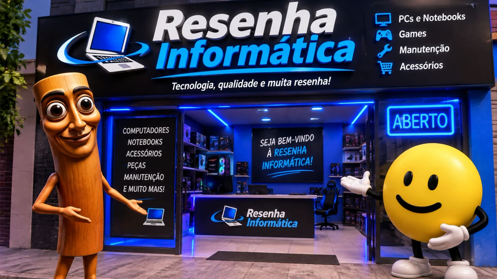

Sua história
A loja foi fundada pelo lendário Tun Tun Sahur ao lado do visionário Sr. Verity em 1967, em uma garagem cheia de fios desencapados, placas-mãe misteriosas e muito café.
O objetivo principal da loja sempre foi fazer com que a tecnologia da resenha chegue a todos os cidadãos do mundo todo, garantindo segurança de ponta, FPS alto e muita inovação.
Desde o início, o Sr. Verity tinha ideias revolucionárias, como promover a resenha de muitos processadores AMD Ryzen gulosos para todas as pessoas a preço de banana (literalmente, nos primeiros anos eles aceitavam cachos de prata e nanica no balcão como forma de pagamento).
Enquanto isso, Tun Tun Sahur cuidava da bancada de testes, garantindo que nenhuma placa de vídeo pegasse fogo durante as jogatinas mais intensas da vizinhança e que todo PC saísse rodando liso.
Nos anos 90, a dupla enfrentou a temida "Crise da Tela Azul", mas superou o desafio distribuindo pentes de memória RAM e coolers turbinados para salvar os computadores de todo o bairro.
Com a chegada da internet rápida, a fama da dupla ultrapassou fronteiras e a pequena garagem virou referência mundial em custo-benefício, montagem de PCs brabos e suporte técnico sem enrolação.
Hoje, décadas depois, a loja continua firme com a mesma missão: entregar hardware de respeito, acabar com o lag mundial e manter a resenha tecnológica viva para as próximas gerações.
